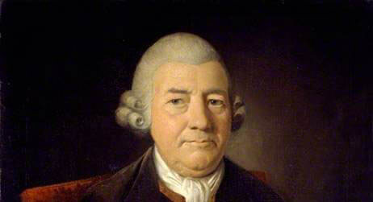

Saul Bass
Saul Bass is arguably one of the most influential American graphic designers of his time but what made him?
John Baskerville (1706–1775) was an English businessman whose entrepreneurial attentions included japanning and papier-mâché; he is, however, best remembered as a typographer and printer, not least for the design of the eponymous typeface which, to this very day, bears his name.
The Man
Saul Bass was born in The Bronx, New York on 8th May 1920 to Eastern European Jewish immigrant parents. He began drawing from an early age and went on to graduate from James Monroe high school. He attended the Art students League in Manhattan part-time until going on to attend night classes at Brooklyn college with György Kepes (a famous Hungarian designer). After completing his studies, he worked as a freelance designer before moving to Hollywood and becoming a commercial artist.
In the 1940’s Bass began his time in Hollywood. He started to create movie posters, corporate logos and later went on to make movie title sequences. In 1952 he established his own firm “Saul Bass and Associates”.
“Having been an early admirer of the beauty of letters, I became insensibly desirous of contributing to the perfection of them. I formed to myself ideas of greater accuracy than had yet appeared, and had endeavoured to produce a set of types according to what I conceived to be their true proportion.” —John Baskerville, preface to Milton, 1758 (Anatomy of a Typeface)
Film Posters

Bass worked alongside many prominent filmmakers such as; Alfred Hitchcock, Otto Perminger, Billy Wilder, Stanley Kubrick and Martin Scorsese.
Bass’ main goal was to distil the movies main ideas, themes and tone into as simple of an image as possible. Or in other words symbolise and summarise. To have a film illustrated by one image was a very daring notion in the 50’s. Most movies were illustrated in a “romantic” style by the use of a wide range of colours and appealing illustrations from a snapshot of the movie in an attempt for the audience to be attracted to the poster and go and see the film.
Bass’ major break was when he designed the film poster for “Carmen Jones”. The poster he designed was shockingly simple, with a still shot of actress Dorothy Dandridge in black and white. With a hint of red used on her lips and skirt to reflect the fiery, seductive character within the film. Bass wanted to break the “romantic” style used in film posters and this poster became a big part of that.
Bass became known for his simplistic, minimal posters. The characteristics of his posters often include a limited colour palette made up of 3 or 4 colours, typically black/white and a bright contrasting colour for example the colour red. He also often uses 1 dominant colour background colour accompanied with simple black shapes over it. Bass also frequently and confidently uses negative space to create impact. The use of image and colour combined with negative space stops the poster from becoming too busy and. Creates a simplistic yet effective poster.
Another film poster Bass became well known for was “The man with the golden arm” Directed by Otto Perminger. The film is about a jazz drummers struggle with heroin and Bass designed a simple yet shocking poster for the film. The poster includes a crooked arm surrounded by san-serif type and geometric blocks of colour - an iconic poster which symbolised the movie. Preminger who was so impressed with Bass’ ability to turn the movie and title into visual substance also asked him to create the title sequence for the film.
| Hot type | Cold type | Digital Type |
|---|---|---|
| Deberny & Peignot | Autologic | Linotype |
| Fry foundry | Berthold | URW++ |
| American Type Founders | Comugraphic | Monotype |
| Ninotype | Hell AG | Bitsream |
| Lanston Monotype | Monotype |
Mrs Eaves

Mrs Eaves is named after Sarah Eaves, the woman who became John Baskerville’s wife. As Baskerville was setting up his printing and type business, Mrs. Eaves moved in with him as a live-in housekeeper, eventually becoming his wife after the death of her first husband, Mr. Eaves. Mrs Eaves is a revival of the types of English printer and punchcutter John Baskerville, and is related to contemporary Baskerville typefaces.
Like Baskerville, Mrs Eaves, cut by Zuzana Licko of Émigré, has a near vertical stress, departing from the Old Style model. Identifying characters, similar to Baskerville’s types, are the lowercase g with its open lower counter and swash-like ear. Both the roman and italic uppercase Q have a flowing swash-like tail. The uppercase C has serifs at top and bottom; there is no serif at the apex of the central junction in uppercase W; and the uppercase G has a sharp spur suggesting a vestigial serif.